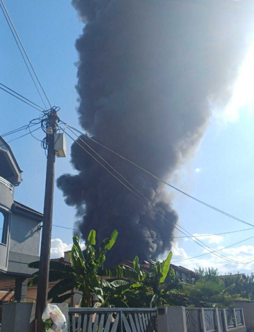
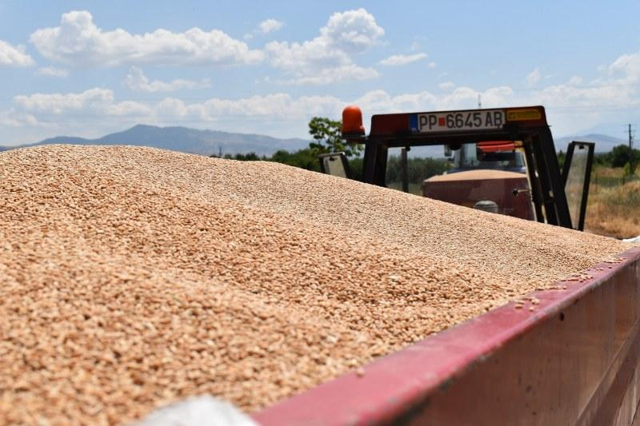
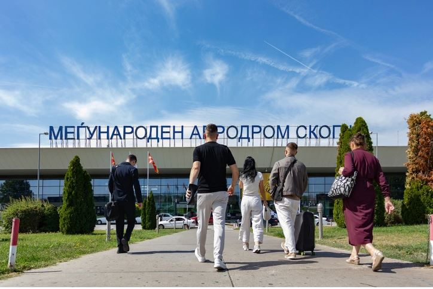
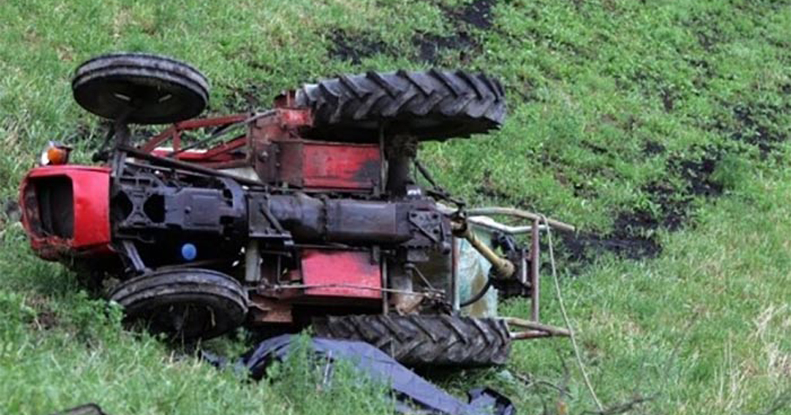
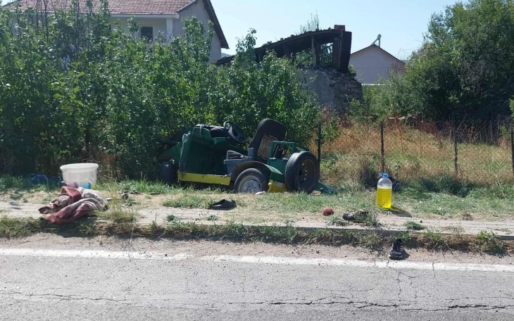

Најнови Вести
Нема повредени лица во пожарот во Трубарево, не се дозволува негово ширење, вели Ангелов
Стојанче Ангелов, директор на ДЗС,соопшти дека со пожарот не се зафатени објекти на фирмата Нула отпад,како што претходно информираше, т...
Филипче: Македонија стана опасно место за живеење, Владата нема контрола над пожарите во депониите
Во изминатите денови, Македонија се соочува со еколошка и безбедносна катастрофа: „За неколку дена изгореа две фабрики, две недели власт...
Ѓорческа избори финале на турнирот во Букурешт
Македонската тенисерка Лина Ѓорческа имаше успешен старт на ИТФ турнирот во Слобозија, Романија. Во следното коло Ѓорческа ќе игра прот...
Министерството за здравство дистрибуира заштитни маски за жителите на Трубарево
Министерството за здравство и Институтот за јавно здравје ќе ја следат понатамошната состојба, со цел навремено преземање на сите потреб...

МЗ: Да се почитуваат препораките на ИЈЗ кога постои евентуален ризик од загадување на воздухот и од штетни материи
При неопходна нужност за движење на отворено , во области кои се во непосредна близина на опожарени места, да се користат соодветни маск...
Македонија
Нема повредени лица во пожарот во Трубарево, не се дозволува негово ширење, вели Ангелов
Стојанче Ангелов, директор на ДЗС,соопшти дека со пожарот не се зафатени објекти на фирмата Нула отпад,како што претходно информираше, т...
Филипче: Македонија стана опасно место за живеење, Владата нема контрола над пожарите во депониите
Во изминатите денови, Македонија се соочува со еколошка и безбедносна катастрофа: „За неколку дена изгореа две фабрики, две недели власт...
Министерството за здравство дистрибуира заштитни маски за жителите на Трубарево
Министерството за здравство и Институтот за јавно здравје ќе ја следат понатамошната состојба, со цел навремено преземање на сите потреб...
МЗ: Да се почитуваат препораките на ИЈЗ кога постои евентуален ризик од загадување на воздухот и од штетни материи
При неопходна нужност за движење на отворено , во области кои се во непосредна близина на опожарени места, да се користат соодветни маск...
Ѓорѓиевски се сомнева како мнозинството граѓани дека пожарите свесно се подметнуваат пред избори, има сеопфатен акциски план за чисто и здраво Скопје
На овој напад против животната средина и против здравјето на граѓаните мора да му се стави крај. Она што сите го гледаме, го зборуваме,...
Свет

Трамп до НАТО: Ќе воведам големи санкции кон Русија, кога сите ќе престанете да купувате нафта од неа
Трамп ќе ѝ воведе построги санкции на Русија кога сите членки на НАТО ќе престанат да купуваат руска нафта</a> appeared first on <a href...
Бил левичар по убедување: Ова е осомничениот за убиството на Чарли Кирк
Осомничениот убиец на Чарли Кирк, кој е идентификуван како Тајлер Робинсон (22), е уапсен, потврди шефот на ФБИ, Кеш Пател, на заедничка...
Министрите за финансии на Г7 разгледуваат можни санкции и царини за поддржувачите на руската војна
За време на состанокот во Отава, министрите се согласија да ги забрзаат дискусиите за користење на замрзнатите руски средства за финанси...

Трамп навести истрага против Сорос
Ќе го испитаме Сорос, бидејќи мислам дека тоа е случај против него и други луѓе, според Законот за организации под влијание на рекетари ...
Економија

Српската Алта банка достави понуда за преземање на Стопанска банка Битола
Доколку преземањето успее, Македонија ќе стане дел од мрежата на Алта банка. Тие очекуваат дека искуството на Алта банка ќе го подобри ...

Народна банка: Поевтинуваат секојдневните плаќања за граѓаните и за компаниите
Активностите на Народната банка за намалување на надоместоците на банките за електронските плаќања заради нивна поголема достапност и ко...

„Инвеститорски ден“, можност за физичките лица да тргуваат на македонската берза без трансакциски трошоци
Шеста година по ред на Македонска берза успешно се одржа „Инвеститорски ден“ на којшто сите домашни физички лица имаа можност да тргуваа...

Трипуновски: Реколтата пченица речиси ги задоволува домашните потреби, нема потреба да зависиме од увоз
Денеска министерот за земјоделство, шумарство и водостопанство, Цветан Трипуновски, присуствуваше на манифестацијата организирана од Slo...

Меѓународниот Аеродром Скопје ја доби престижната награда за „Најпријатно аеродромско искуство во Европа”
За ТАВ Македонија таа е признание од патниците за квалитетот на аеродромските услуги и потврда дека посветеноста и тимската работа на ае...
Хроника

Маж од Зајас трагично загина во несреќа со трактор
Во нашето полициско одделение е пријавено дека на шумски пат во атарот на Зајас, под трактор универзал бил пронајден Џ. М. Според изврше...

Тројца повредени во сообраќајка кај Струмица
Три лица се повредени во сообраќајка меѓу камион и работна машина за сечење огревно дрво на регионалниот пат Струмица-Валандово во селот...

Во келијата на Васев пронајдени три мобилини телефони, тој тврди дека не се негови
Во келијата на поранешниот директор на Клиниката за радиотерапија и онкологија Нино Васев пронајдени се три мобилни телефони, за кои тој...
Спорт
Ѓорческа избори финале на турнирот во Букурешт
Македонската тенисерка Лина Ѓорческа имаше успешен старт на ИТФ турнирот во Слобозија, Романија. Во следното коло Ѓорческа ќе игра прот...

ЗИДАН СПРЕМЕН ЗА НАЈГОЛЕМИОТ ПРЕДИЗВИК Франција добива нов селектор по Светското во 2026
Претходно, Дидие Дешам изјави дека Светското првенство во 2026 година ќе биде неговиот последен турнир на чело на репрезентацијата. Спо...

Дончиќ по поразот од Германија: Едноставно сум многу лут, можев да направам повеќе
Дончиќ по поразот од Германија: Едноставно сум многу лут, можев да направам повеќе » :. Најголемата ѕвезда на словенечката кошаркарска ...